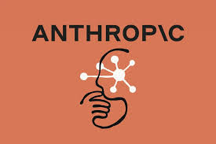

Echo con ia Claude
Productos
Inicio
Información
Bienvenido a IA Claude
Los mejor Inteligencia Artificial
Nuestros Creadores

Anthropic
Empresa creadora de ia Claude
900 v
Ver
Daniela Amodei
Uno de los creadores de Anthropic
300 v
Ver
Dario Amodei
Uno de los creadores de Anthropic
500 v
Ver